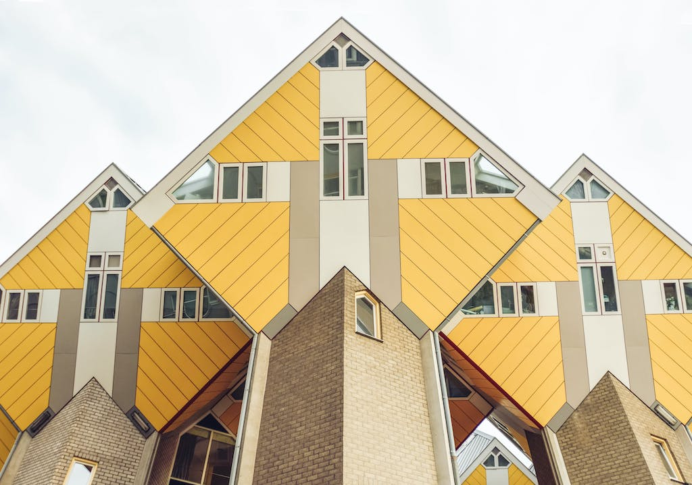

- ROTTERDAM CENTRAAL HEEFT 170.000 BEZOEKERS PER DAG
- ROTTERDAM HEEFT DE BESTE BAR TER WERELD
- NAPOLEON VERBLEEF OOIT IN ROTTERDAM
- KAPSALON WERD UITGEVONDEN IN ROTTERDAM
- JIMMY HENDRIX ZIJN ENIGE OPTREDEN WAS IN NEDERLAND IN ROTTERDAM
Kubus huizen
 De kubushuizen van Piet Blom is een fenomeen sinds de bouw ervan in 1984. Nog dagelijks doet het vele hoofden draaien: kan je daarin wonen?! Opgezet als ‘bomen’ (het geheel staat ook bekend als ‘Het Blaakse Bos’), bestaan de 38 woningen uit ‘stam’ en ‘kruin’. Elk huis heeft drie etages: het ‘straathuis’ is op straat gericht, het ‘hemelhuis’ naar boven en het ‘loofhutje’ is de serre bovenin. In de Kijk-kubus en het Stayokay hostel ervaar je zelf hoe dat nou loopt, staat en slaapt. Kaartjes zijn te koop aan de deur.
Diergaarde Blijdorp / Rotterdam Zoo
 Ga op wereldreis tijdens een dagje uit in
Blijdorp,
één van de mooiste dierentuinen van Europa. Ontmoet ijsberen boven
en onder water in Arctica, wandel over de zeebodem in de tunnel
door het haaienbassin in het overdekte waterwereldeel Oceanium,
bezoek de prachtige okapi’s in Afrika, sta oog in oog met de
leeuwen en ontmoet de de olifantenfamilie in Azië. In de tropische
warmte van het overdekte vlinderparadijs Amazonica fladderen
honderden kleurige, Zuid-Amerikaanse vlinders: ingrediënten voor
een onvergetelijk dagje uit.
Ga op wereldreis tijdens een dagje uit in
Blijdorp,
één van de mooiste dierentuinen van Europa. Ontmoet ijsberen boven
en onder water in Arctica, wandel over de zeebodem in de tunnel
door het haaienbassin in het overdekte waterwereldeel Oceanium,
bezoek de prachtige okapi’s in Afrika, sta oog in oog met de
leeuwen en ontmoet de de olifantenfamilie in Azië. In de tropische
warmte van het overdekte vlinderparadijs Amazonica fladderen
honderden kleurige, Zuid-Amerikaanse vlinders: ingrediënten voor
een onvergetelijk dagje uit.